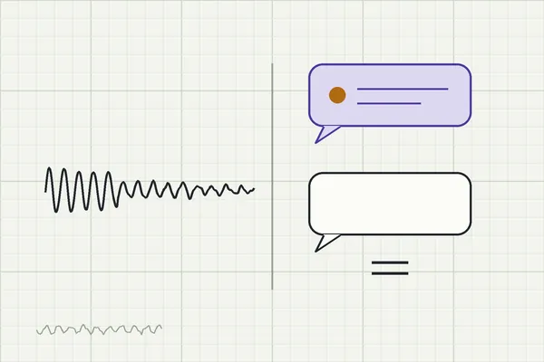

2025-09-24 · Paper + dataset · Scientific Reports (data: OpenNeuro ds005620)
A repeated awakening study exploring the capacity of complexity measures to capture dreaming during propofol sedation

Brain complexity dropped under sedation, but did not differ between people who said they had been dreaming and people who said they had not.
Twenty volunteers were sedated and woken several times to ask whether they had experienced anything. Complexity measures fell with sedation as expected. But they did not tell 'I was dreaming' from 'nothing' within sedation. Only 5 wakings gave a clear 'nothing', so the test could only have caught a large difference.
20 healthy participants, propofol, resting EEG and TMS-EEG (PCIst) plus single-channel LZc. 52 attempted awakenings: 24 experience, 5 no experience, 23 unarousable or uninformative. Both measures fell from wake to sedation; no evidence of a difference between experience and no-experience awakenings within sedation (linear mixed models). Data: OpenNeuro ds005620 v1.0.0, CC0, 21 subjects, 83.0 GB in full (OpenNeuro metadata).
What we do with it
One of our L2 datasets. The full set is far over our 1.5 GB budget; we fetch only the pre-awakening sedation files per subject. The 5 no-experience awakenings make it weak alone for dream vs no-dream; pool with DREAM. Planned
Read the original. Source checked against the original.